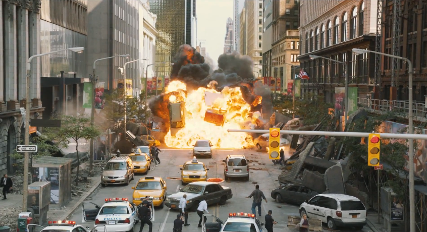
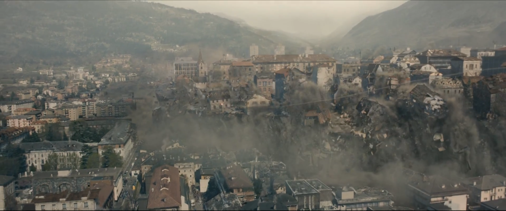
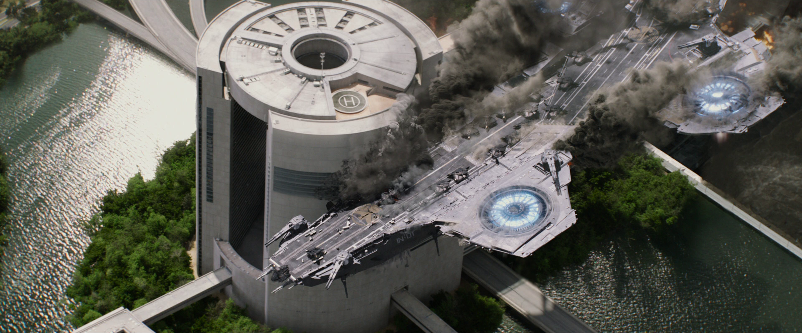

Servicio Homologado de Inteligencia, Espionaje, Logistica y Defensa
Acta de registro de superhumanos
Tras los acontecimiebtos ocurridos en Nueva York, Washington, Sokovia y Nueva Mombasa, la Organización de las Naciones Unidas en conjunto con la Agencia de Servicio Homologado de Inteligencia, Espionaje, Logistica y Defensa, crean el Acta de registro de Superhumanos para poder registrar a todo aquel que posea habilidades especiales y que represente un riesgo para la seguridad mundial.
El acta busca registrar la identidad de todo superheroe, así como su ubicación y saber acerca de la vida que ha llevado a lo largo de su trayectoria como superheroe, aun no se ha podido registrar a todos los existentes ya que seu paradero es desconocido o su identidad sigue siendo desconocida.
  